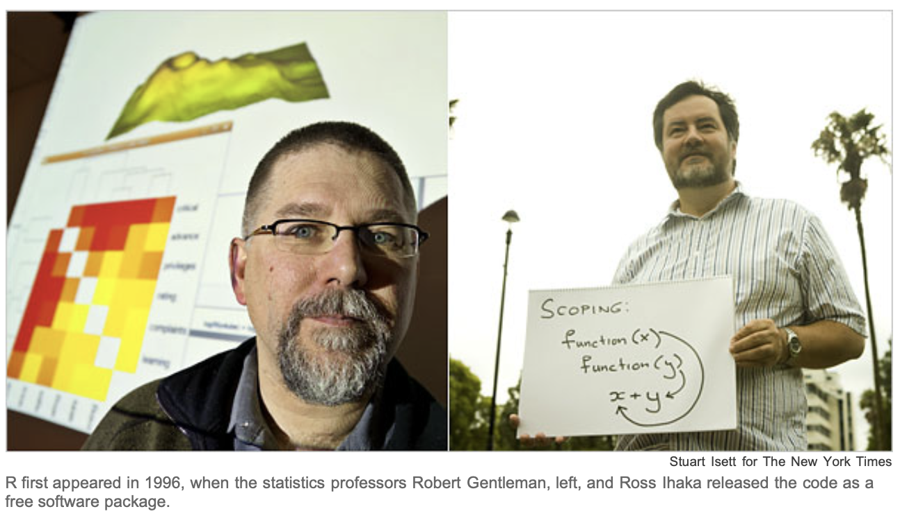

[1] 32 Rの基礎
2.1 共通語としてのR
いざ我等降り，彼処にて彼等の言葉を乱し，互いに言葉を通ずることを得ざらしめん。
押井守監督による1989年のアニメーション『機動警察パトレイバー 劇場版』では，旧約聖書創世記11章から上記の語句が引用されます。 もうずいぶん前になりますが，院生だった頃の私が（映画館ではなく）テレビで観た『パトレイバー』の「バベルの塔」に関する上述のシーンは， 最新の基本ソフトウェアを導入した産業用ロボットが暴走する事件を描くこの映画の中でも，特に強く印象に残りました。
というのも，その当時，統計解析用のソフトウェアやプログラミング言語としてSASやSPSS，MATLAB，MATHEMATICAなどに囲まれ， 講義によってはC言語などを使い，特定の統計モデルに関しては専用のソフトウェアの使用法をそれぞれ学ぶ必要がある中で， 先行研究の手法がSという言語で実装されていたため，さらに新しい言語を学ぶ必要に迫られていたからです。
教科書の分析例や，統計のそれぞれの手法をバラバラの統計ソフト，言語で理解するのは困難が伴いました。 また，効率も悪く，拙い自分の乱れた言葉では分析が停止したり， ひどい時にはプログラムが暴走したりしてしまうことも少なくありませんでした。
現在でも，社会科学の分野ではSPSSが広く普及しています（最近では清水先生のHADやJASPなども人気？）。 企業などではExcelが活用され，データを処理するソフトというとExcelを連想するのが一般的かもしれません。
ところが一方で，20年以上前から計量的な研究の領域やデータ解析の場面で， ひとつのアルファベットの文字が，特に強い関心を惹きつけてきました。 その文字とは，R，統計解析環境R言語です。 Rは現在，lingua franca（共通語）という表現が用いられるほど普及し， 分析に活用され，さらに発展を続けています。
みなさんも，“… using R” や “… with R” といったタイトルや， 「Rによる〇〇」「Rで理解する□□」のような書名を見かけることが多いのではないでしょうか。 統計数理研究所の公開講座ではRを実習に活用する講義がほとんどですし， Rとは別のソフトウェアの使用を前提にしていた統計学の教科書が，R版に書き換えられる，といった変化も多く起こりました。 改訂版の序文では，その理由として，多くの大学でRの採用が進んでいること， Rは統計的手法を包括的に扱えることなどが挙げられています。
New York Timesでは，2009年の時点でGoogleや製薬会社のPfizer，Bank of Americaといった金融，Shellのようなエネルギー産業まで幅広い業種でR の利用が広がっている実態が取り上げられています。また，大学でのRの採用の拡大， 大学院修了生のRの習得の実態などが報じられています。 この記事自体に対する反響も大きく，記事発表の2日後には記者がブログで補足を行っており， Rに向けられた注目の高さを窺い知ることができます。
機械学習や人工知能研究に強いPythonを好む人も多いとは思いますが， これまでの動向を考えると，Rを知ることは手法の学習や研究，実用など様々な場面で効率性， 生産性を向上させ，非常に有効であると考えられます。

2.2 Rとは何か
2.2.1 言語であり環境
Rでは，想像し得るあらゆることを実現可能である，と述べる人もいます。Rは効率的なデータ操作，行列の形式にも強い計算機能，統合的かつ豊富なデータ解析手法，さらに，データの分析や表示のためのグラフィクスやプログラミング言語としての機能を備えた汎用的で統合的なアプリケーションソフトウェアです。UNIXやmacOS，Windowsなど多様なオペレーティングシステム上で使用することができます。
高機能なRは，その一方で，ソースコードを全面的に公開し，自由に複製，配布，改変が可能であるという特徴を持っています。つまり，どのような仕組みで動いているのかを完全に把握できるRを無料で入手し，利用できるということです。このオープンソースとしてのRの特徴は，自発的で，分散的かつ協働的な開発を促し，世界中の人々がRの発展に寄与する状況を生み，現在も改良が続けられています。
Rは更新の頻度が高く，年に2回，4月と10月に細かい機能を追加するなどのマイナーな更新が行われます。それ以外でも，主に小さな不具合の修正であるパッチでの更新が随時行われています。 また，R本体だけでなく，分析手法や他のソフトウェアとの連携など様々なRの拡張機能が多くの研究者などによって開発され，パッケージ（package）という形で入手可能となっています。このパッケージの充実ぶりを考えると，Rではあらゆることが可能であるという上述の意見も，あながち大げさとは言えない印象を受けます。
Rは，統計解析やグラフィクスのための言語であり環境であると表現されます。ここで環境（environment）という言葉は，Rが十分に計画された一貫した設計思想のシステムであることを示しています。
2.2.2 Rの導入
Rはhttp://www.r-project.org/からダウンロードすることで入手可能です。実際のダウンロードの際には，CRAN（Comprehensive R Archive Network）と呼ばれるサイトから最寄りのミラーサイト（https://ftp.yz.yamagata-u.ac.jp/pub/cran/）を選択してダウンロードすることとなります。
Rは，オンライン上のマニュアルが充実しているだけでなく，ヘルプも役に立ちます（Rに限らないかも知れませんが）。 使い始めの最初のうち，Rの関数を使って処理を実行していく際に，何かわからないことや困ったことがあったら，ヘルプを参照するだけで解決されることが多々あります。 Rを使い慣れているつもりでも，ヘルプの関数の説明に新たな発見があることも珍しくありません。
ある関数の詳細を調べるだけでなく，目的の処理に対応する関数を見つける検索のための関数も存在します。指定した語句の全部，または一部を含む関数を探したり，曖昧なマッチングで検索したりすることが可能です。
ある関数が，実際どのように使用できるかのデモンストレーションを実行させたり，具体的な使用例を表示させる関数は，Rを実際的に理解するのに大変便利です。自分自身で入力し，結果を確認する作業の他に，これらの関数やヘルプを積極的に活用すると，Rで実際に何が可能なのかが，その実現方法とともに一目瞭然となり，理解が早く深まることが期待できます。
2.2.3 関数
Rにおける関数（function）は，原則，引数（argument）を受け取り， 処理し，戻り値（return value）を返します。
Rでは，関数名(引数名=値)という形で様々な関数を用い， あるいはそれらを組み合わせ，時には自分で関数を作成して目的の処理を行っていきます。 関数の処理に具体的な内容を与えるのが引数です。 引数が複数の場合はカンマ（ ,）で区切ります。 なお，引数名を省略し，その値のみを記述する場合もあります。 また，特別な場合を除いて明示的に指定する必要のない引数や，そもそも引数を必要としない関数もあります。
戻り値は原則ひとつですが，複数の結果を返したり，明示的な戻り値がない関数もあります。
電子レンジに食品を温める機能（function）があるように， 関数は何らかの処理を機能として提供します。 例えば，関数（機能）電子レンジに 冷やご飯と温め時間を引数として渡すと， 電子レンジ(食材=冷たいごはん, 温め時間=2分) のように実行され，温められたごはんが手に入ります。
同様に，以下のように正の平方根（sq uare r oot）を計算する 関数sqrt()の引数xに\(9\)を指定すると， 3という戻り値が得られます。
2.2.4 オブジェクト
2.2.4.1 ラベルの付いた容器
少し（退屈な）遠回りになりますが，Rにおけるオブジェクト（object）の考え方を紹介します。
Rで扱う「対象」は全て一括りにオブジェクトと呼ばれます。 Rでは，数値に限らず文字列や関数，詳細な統計解析結果などを，作業スペース（working space）と呼ばれるRの環境にオブジェクトとして格納できます。 作業スペースとは，その名の通りRの作業台です。 皆さんが勉強するときの「机の上」に例えることができます。 机の上の教科書やノート，参考書などがオブジェクトで，全体として「勉強環境」が構成されていると考えてください。
Rでは，名前が付いたオブジェクトの集合体であるフレーム（frame）によって環境が構成されます。環境という概念の導入によって，大量のオブジェクトを扱う巨大で複雑なプロジェクトも，混乱なく効率的に扱うことが可能になります。
オブジェクトはよく「ラベルがついた箱」に例えられます。 何でもいれられる箱，容器のようなイメージです。
以下のように，ラベルを付けてRにオブジェクトを作りましょう。オブジェクトへの値の代入，あるいは付値（assignment）と呼ばれる作業です。
Code
[1] 3オブジェクトへの付値は，<-を用いて行います。不等号記号とマイナス記号との間にスペースを入れないよう注意しましょう。5行目のように，関数print()で ( )内に指定したオブジェクトの中身，内容を表示させることができます。なお，オブジェクト名だけを入力しても同じです。ここでは，3が代入されていることが確認できます。
また，記号#はコメントの開始を表し，以降改行まで無視されます。
オブジェクト名には大文字または小文字のアルファベット，数字，ピリオド（.），アンダースコア（_）が使われます（日本語も使用可能ですが，オブジェクト名としてはオススメしません）。自分で付値するオブジェクト名の先頭はアルファベットとします。ピリオドやアンダースコアはオブジェクト名の分かりやすさを高めるために使用されます。 Rは大文字と小文字を区別するので注意しましょう。 なお， break， else， for， function， if， in， next， repeat， return， file， TRUE， FALSEは， R において特別な機能を付された予約語であり，オブジェクト名には使用できません。
2.2.4.2 オブジェクトの属性
オブジェクトは容器のようであるとお伝えしましたが， 中に何が入っているか，いわばタグ付けされていて 非常にわかりやすいというのが便利なところです。
オブジェクトには，属性（attribute）があります。 属性によってそのオブジェクトの特徴，性質を表し，適切な処理が行われます。 例えば，以下の計算がそれを端的に示しています。
Error: object 'deux' not foundオブジェクトtroisは文字列として“3”が格納されているので， これを1や2が入ったオブジェクトun，deuxと足すという演算は意味を成しません。 それがエラーに示されています。 これは，オブジェクトの「タグ付け」のうち，モード（mode）と呼ばれる属性に関わる問題です。
2.2.4.3 モード
モードは，オブジェクトの属性の中でも，長さ（length）とともに本来的なものとされます。 データ分析で重要になるモードの種類は，以下の3つです。
numeric：数値型（整数 integer と倍精度 double の両方を含む）charachter：文字列型logical：論理型
オブジェクトのモードが何であるかは，関数mode()で確認することができます。
[1] "numeric"[1] "character"[1] "logical"Code
[1] 1 2 3 1 06行目の中身をRに出力すると，論理型であるTRUEとFALSEが， それぞれ\(1\)と\(0\)に変換されていることに注意しましょう。
このベクトルのモードは数値型です。つまり，ベクトルは単一種類のモードしかとり得ず， 異なるモードの要素が含まれる場合，強制変換されます。 例えば，文字列と数値をベクトルとして並べれば，数値は文字列に変換されます。
オブジェクトが，ある特定のモードであるかどうかを判定するには， abcをそのモード名として，関数is.abcを用います。
[1] FALSE[1] FALSE[1] TRUEなお，中身が空の，つまり長さ0のベクトルを作成することも可能であり，そのオブジェクトにもモードが付与されます。
NULLは空値，ヌル値と呼ばれ， オブジェクトvec_empyの中身が空っぽであることを表します。 length()という関数は，オブジェクトの「長さ」を返します。 オブジェクトによって，長さという表現が必ずしも最適ではないので，ここでは「長さ」と表記しています。 ベクトルの場合，length()が返すのは要素の数です。 要素はありませんので，0と表示されています。 ここではモードも“NULL”です。
2.2.4.4 クラス
モードというオブジェクトの属性は，数値か文字かといった基礎的な特徴を表していました。 基礎的であるだけに重要な区別ですが，より進んだ分析においては汎用性，抽象性が高過ぎることも否めません。 これに対して，オブジェクトにはクラス（class）という属性も存在します。
モードが，例えば「本」という抽象化の水準とするならば， クラスは「教科書」，「参考書」，「マンガ」程度の抽象化と考えることができます。 以下の具体例で，クラスという概念を導入する利点を確認してみましょう。
8月25日の金曜日から，9週分の金曜日の日付を表示します。
Error in UseMethod("weekdays"): no applicable method for 'weekdays' applied to an object of class "character"関数weekdays()は曜日を返す関数です。 モードが文字列（ここではcharacterというクラスでもある）である“2025-08-25”には 曜日も何もありませんから，当然エラーが返されます。
関数as.Date()は，単なる文字列である“2025-08-25” を， Dateという日付クラスに変換します。 ある特定のモードabcの判定に is.abc() という関数があったように，特定のモード，あるいはクラスに変換する as.abc()という関数が用意されています。
[1] "2025-08-25" "2025-09-01" "2025-09-08" "2025-09-15" "2025-09-22"
[6] "2025-09-29" "2025-10-06" "2025-10-13" "2025-10-20"seq()という関数は，規則的な（sequentialな）要素のベクトルを生成します。 8月25日（引数fromで指定）から1週間おき（引数by）に， 9週分（length.out）の日付を生成しています。
オブジェクトvec_9weeksの特徴を調べてみましょう。 クラスを知るには，関数class()を用います。
[1] "numeric"[1] "Date" Date[1:9], format: "2025-08-25" "2025-09-01" "2025-09-08" "2025-09-15" "2025-09-22" ...モードはnumeric，すなわち数値であることが返されています。 しかし，ただの数字ではありません。そのクラスは“Date”です。 5行目のstr()は，様々なオブジェクトの構造を知るのに便利な関数です。
では，ここでvec_9weeksの平均を関数mean()を用いて計算してみましょう。
上記のように，2025-09-22が2025-08-25と2025-10-20の平均として計算されます。 このような処理こそ，Rが統合的な統計解析環境であると言われる所以です。 Dateというクラスに属しているオブジェクトに関数mean()が適用されると， このクラスの特徴に応じて，通常の算術平均を求める関数とは異なるmean.Date()という関数が使用されます。 実はseq()を日付に適用したときにも，同様のことが起こっていました。
分析者は，数値の平均にはこの関数，日付の平均にはあの関数というようなことを意識する必要はありません。 適切にオブジェクトを扱っていれば，適切な方法が選択されるようにRは設計されています。
なお，モードやクラスを判定する関数is.abc()や， あるモードやクラスに変換するas.abc()には， 以下のコードで出力されるように様々なものがあります。
2.2.5 環境
pi <- 3とした付値において ダメな例であるとコメントを付したのは， piはRがすでに使用しているオブジェクト名だからです。この代入の後，以下の計算をすると，期待される答え\(-1\)が返ってきません。
オブジェクトを取り除くには，関数rm() またはremove() を使用します。
[1] "day1" "doux" "middle_day" "one" "three"
[6] "trois" "two" "un" "vec_9weeks" "vec_empty"
[11] "vec_num_logi"1行目でオブジェクトpiを削除しています。 2行目のls()という関数は， 作業スペースに存在するオブジェクト名を返す関数です。 出力のcharacter(0)は，文字列が何も無いことを意味しています。つまり，中身が3であるpiというラベルのオブジェクトは消去されたことが確認できました。
ところが，以下のようにpiというラベルの オブジェクトの中身を確認することができ，その値は円周率であることが確認できます。
rm(pi) という命令は，Rに元々組み込まれた pi まで削除した訳ではないことがわかります。 これは，Rの「環境」という考え方を表すものです。
3を代入したpiは， 作業スペースと呼ばれる環境にありました。 これは，大域的環境（global environment）と呼ばれる環境です。 最も上層で優先される場所になっています。 一方，組み込みのpiは， baseと呼ばれる環境に存在します。 作業スペースにあったpi というオブジェクトが無くなったので， baseのpiの値が表示される結果となりました。 なお，base環境にあるオブジェクトを消去することはできません。
環境について，次のように確認してみましょう。
[1] 3pi : num 3pi : num 3.14
pipe : function (description, open = "", encoding = getOption("encoding")) 上では関数ls()ではなくls.str()を使用しています。 これによって，引数envir で指定した環境内にあるオブジェクト名と，その構造（structure）も同時に表示させることができます。 構造とは，オブジェクトの特徴を示したものです。 なお，引数envirに何も指定しなければ，そのデフォルト（既定値）である作業スペースが対象となります。
.GlobalEnvと.BaseNamespaceEnvは，それぞれ大域的環境（作業スペース）とbase環境を表すRのオブジェクトです。つまり，環境もRの中ではオブジェクトとして扱われます。
作業スペースにあるpiは， 自分で付値した3であることがpi:num 3 という表示で示されています。 base環境内ではpi:num 3.14であり， それぞれの環境で異なるpi が存在することがわかります。 勉強机と食事用テーブルは，はっきり区別されているわけです。
2.3 Enjoy!
先述したRのデータ操作や計算，描画などの機能は，有機的に連携させることが可能です。例えば，回帰分析の出力結果を用いて，今度はそれを図示すること，あるいは次の段階の詳細な分析に利用することなども容易です。
回帰分析のRでの実行方法は，わずかな変更で一般化線形モデルにも適用できます。また，要約のための関数をひとつ覚えることで，多岐にわたる手法の様々な分析結果も，内部での違いをほとんど意識せずに同様に使用することができます。このことは，データの特徴（より細かくは変数の種類など）に応じた適切な処理，分析手法の選択が行われることを意味します。
そもそもRは，「統合的な考え方に基づき，洗練され，広く認められた揺るぎないソフトウェアシステム」として1998年にThe Association for Computing MachineryのSoftware System Awardを受賞したS言語に基づいています。Sはそれまでのデータの扱い方，分析の仕方，視覚化の方法を決定的に変えたと言われる優れたシステムです。そのようなソフトウェアを設計の根幹に置くRによって，統計解析の様々な要素を総合的に扱えることは，データを詳細に分析し，分析した結果を使って次の分析に繋げるといった対話的，逐次的，探索的なデータ解析を可能にします。グラフィクスなども併用しながら，データから広く深く知見を導くことができる統一的な操作環境は，定型的で固定的なソフトウェアの出力に飽き足らない分析者にとって，理想的であると言えるでしょう。
しかし一方で，Rの柔軟性は，分析者が何をどうしたいのかという目的を明確にし，何をしているのかという分析の実質を把握する必要性を，より高めることも意味します。基本的には，入力画面に関数と呼ばれる命令を入力することで処理を実行していくRでは，ある程度のプログラミングの知識，技術が必要となります。視覚的に分かりやすいインターフェイス上で，マウスなどのクリックによって高度な分析も実行可能なソフトウェアに比べると，「学習曲線が急峻である」「敷居が高い」などと言われる所以のひとつです。
しかし，Rを使用するために必要な資格（ライセンス）に特別なものはいりません。それは関数license()の実行で表示される言葉に象徴されています。
Share and Enjoy.データ解析を楽しみながら学べる，研究できる，使える環境こそRです。実際に使ってみて，その喜びを共有してください。